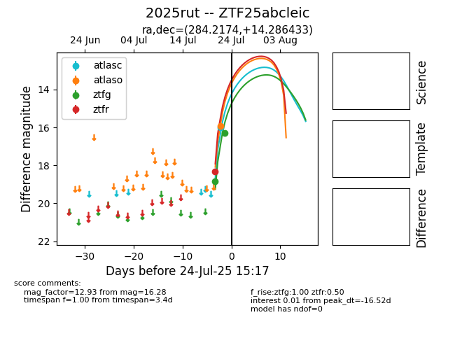

Target 2025rut at 2025-07-24 15:17, see:
FINK: fink-portal.org/2025rut
Lasair: lasair-ztf.lsst.ac.uk/objects/2025rut
ALeRCE: alerce.online/object/2025rut
TNS: wis-tns.org/object/2025rut
YSE: ziggy.ucolick.org/yse/transient_detail/2025rut
alt names
ZTF25abcleic (ztf,fink)
2025rut (tns,yse)
coordinates:
equatorial (ra, dec) = (284.2174,+14.28643)
galactic (l, b) = (46.2923,+5.28352)
photometry
last atlasc=15.99, atlaso=15.91, ztfg=16.28, ztfr=18.34
1 atlasc, 1 atlaso, 2 ztfg, 1 ztfr detections
